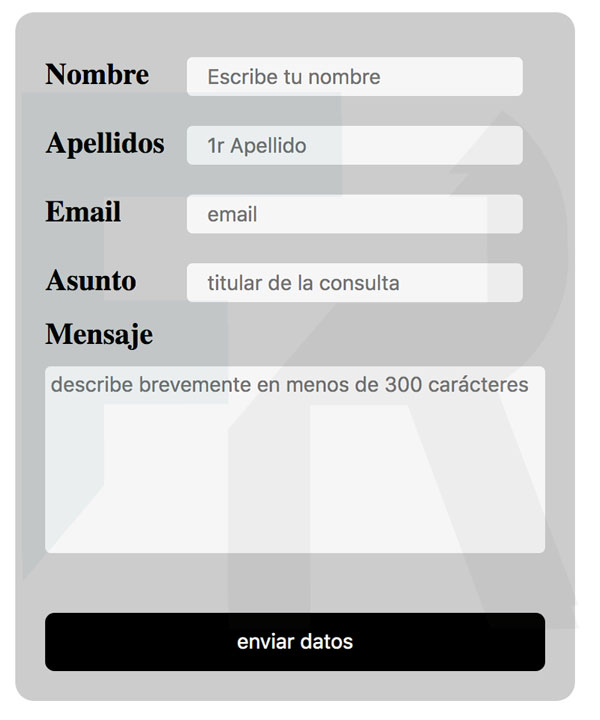

Formularios CSS

El tema central en la estilización de formularios en CSS es mejorar la experiencia del usuario a través de un diseño claro, atractivo y funcional, optimizando tanto la apariencia visual como la accesibilidad del formulario. La meta es hacer que los formularios sean intuitivos y cómodos de usar en cualquier dispositivo.
El tema fundamental de los formularios en HTML es facilitar la captura y envío de información del usuario de manera estructurada y segura. Los formularios deben ser fáciles de entender, accesibles para todos los usuarios, y permitir una validación básica para mejorar la calidad de los datos enviados.
Los formularios son esenciales para recopilar datos y pueden ser diseñados para mejorar la usabilidad y accesibilidad del usuario.
